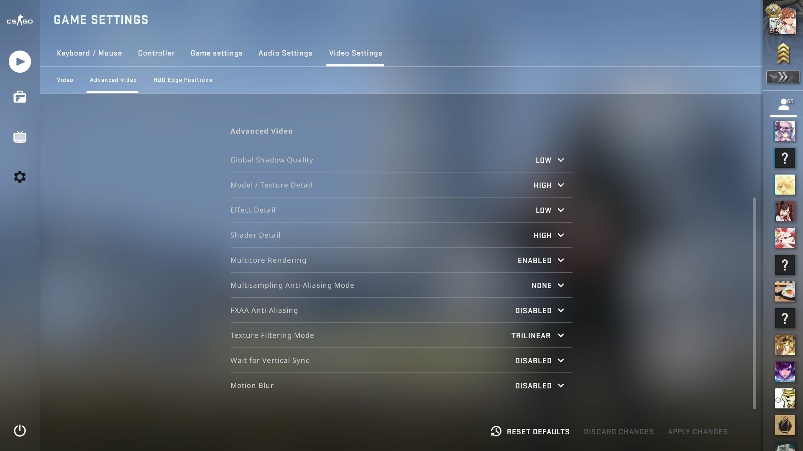

使用方法
下载下面的 alynx.cfg 和 video.txt 中你需要的文件到 Steam 安装目录/userdata/你的 steam ID/730/local/cfg/。
- Windows 一般是
C:\Program Files (x86)\Steam\userdata\你的 steam ID\730\local\cfg\。 - Linux / macOS 一般是
~/.local/share/Steam/userdata/你的 steam ID/730/local/cfg/。 - CS: GO 国服启动器的安装位置一般是
C:\Program Files (x86)\CSGO\userdata\你的 steam ID\730\local\cfg\。
然后编辑 CS: GO 的启动参数，增加 +exec alynx 到最后。我的参数是 -noforcemaccel -noforcemparms -noforcemspd -no-broswer -nojoy -novid -preload -highpriority -panorama -tickrate 128 -language english +exec alynx。你也可以在 alynx.cfg 开头的两个 // 之间找到它。
游戏配置：alynx.cfg（右键“链接另存为”）
部分配置说明。
- 使用红色经典静态准星，开启 T 型准星和中心点。鼠标灵敏度 1.233，开启原始输入。
- 关闭了可能打扰游戏的各种音乐音量，只开启了 MVP 音量。
- 限制最大帧数为 144 FPS。开启了帧数和网络状况显示。
- 绑定鼠标侧键后退键（MOUSE4）为语音，前进键（MOUSE5）为清除血迹。鼠标中键（滚轮按下）切换左右手持枪。
- 关闭“游戏指导提示”、“使用键开启购买菜单”和“自动切换为捡起的武器”，开启了“显示队友装备信息”。
视频设置：video.txt（右键“链接另存为”）
分辨率 1920x1080，画质设置参见下图。
